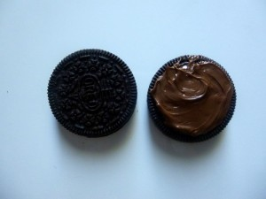
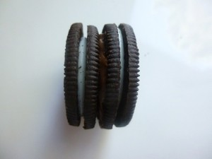
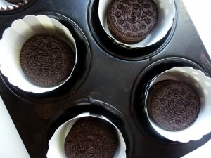
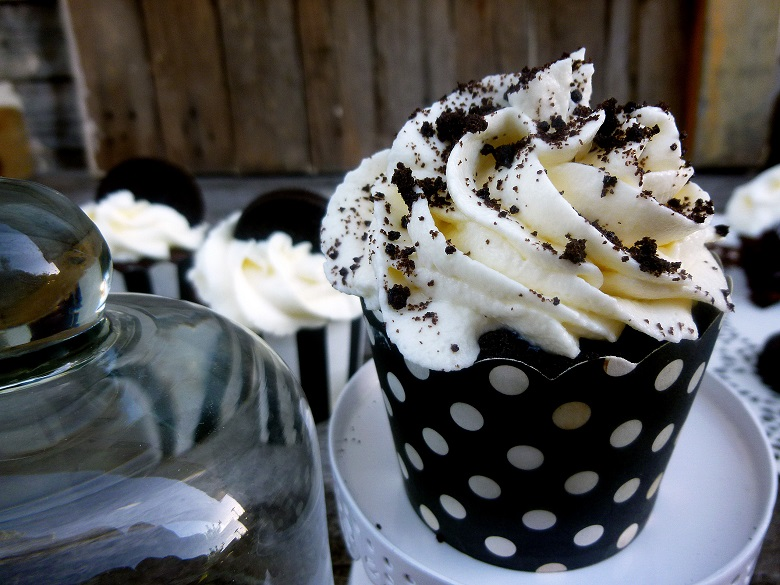
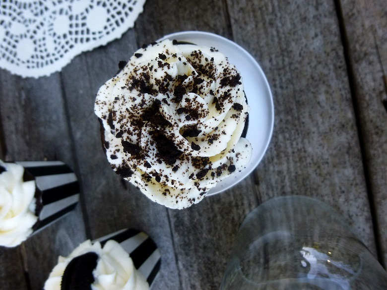

Cupcakes aux Oreo

Coucou tout le monde! Aujourd’hui c’est officiellement la rentrée!! Je ne sais pas vous mais moi quand j’étais petite je me souviens qu’il me tardait de retourner à l’école, de découvrir ma nouvelle classe etc.. Mais le mieux à la rentrée c’est quand même le bon goûter qui nous attend dans la cuisine en rentrant de l’école!
Voila pourquoi j’ai décidé de partager aujourd’hui avec vous une bonne petite recette de cupcakes aux Oreo pour le goûter de vos enfants (mais ça marche aussi pour les grands gourmands 🙂 )
Les Oreo pour ceux qui ne connaissent pas (non c’est pas possible!!!) sont des petits biscuits américains composés d’une crème coincée entre deux biscuits aux chocolats!! Bref perso j’en raffole. On les trouve dans n’importe quel supermarché! J’ai choisi les Oreo classiques pour cette recette (car sinon il existe des doubles crèmes , mes préférés, ultra gourmands!) Mais attention comme vous le verrez dans la recette qui va suivre mes cupcakes aux Oreo contiennent deux Oreo réunis par une fine couche de Nutella pour encore plus de gourmandise!
J’ai choisi un glaçage chantilly-mascarpone pour obtenir un glaçage bien blanc pour rappeler l’intérieur des Oreo .
Ingrédients
- Beurre ramolli - 125g
- Sucre - 100g
- Oeufs - 3
- Farine - 45g
- Bicarbonate de soude - 1cac
- Sel - 1 pincée
- Chocolat noir - 160g
- Lait - 50 ml
- Extrait de vanille - 1càc
- Crème liquide entière - 25cl
- Mascarpone - 250g
- Extrait de vanille - 1càc
- Sucre glace - 30g
Instructions
- Dans un récipient mélanger le beurre avec le sucre jusqu'à obtenir un mélange homogène
- Ajouter les œufs un à un en mélangeant entre chaque
- Dans un bol, mélanger les aliments sec (farine, bicarbonate de soude, ..)
- Incorporer une partie des aliments secs au mélange
- Verser le lait, mélanger et incorporer le reste des aliments secs
- Faire fondre le chocolat au bain marie
- Verser le chocolat fondu et l'extrait de vanille. Bien mélanger
- Préchauffer le four à 180 °
- Coller deux Oreo entre eux avec du Nutella
- Au fond des caissettes mettre les Oreo
- Recouvrir en totalité les Oreo avec la pâte à cupcakes jusqu'au 3/4 de la caissettes
- Enfourner 20 min à 180 °
- Faire monter la crème an chantilly en y ajoutant le sucre glace
- Assouplir le mascarpone avec l'extrait de vanille.
- Incorporer délicatement le mascarpone à la chantilly jusqu'à obtenir un mélange homogène
- Mettre le glaçage dans une poche à douille avec la douille de votre choix et glacer vos cupcakes quand ils sont bien froids pour éviter que le glaçage ne fonde!





Les tips de la communauté
Cupcakes très beaux et savoureux. Association Oreo chocolat très appréciée. Plusieurs testages réussis avec variantes (beurre de cacahuète, spéculoos). Crème à base de mascarpone et chantilly très réussie. Peuvent être congelés 2 semaines à l'avance.
Astuces
- La crème doit être bien froide pour être montée correctement
- Ajouter le mascarpone délicatement une fois que la chantilly est bien prise, ne pas refouetter après
- Les Oreo restent croquants même avec 24h avant consommation
- Caissettes CAKEMART moins larges et plus hautes pour meilleur effet visuel
- Possible de congeler les cupcakes jusqu'à 2 semaines avant, faire le glaçage le jour J
Variantes suggérées
- Ajouter du beurre de cacahuète entre le gâteau et la crème - délicieux
- Utiliser des Oreo spéculoos pour ceux qui n'aiment pas les Oreo classiques
- Réaliser en un gros gâteau au lieu de cupcakes individuels
Ajustements signalés
- La crème non assez froide peut perdre sa tenue - bien refroidir avant de fouetter
- Ne pas refouetter après ajout du mascarpone pour maintenir la texture aérée